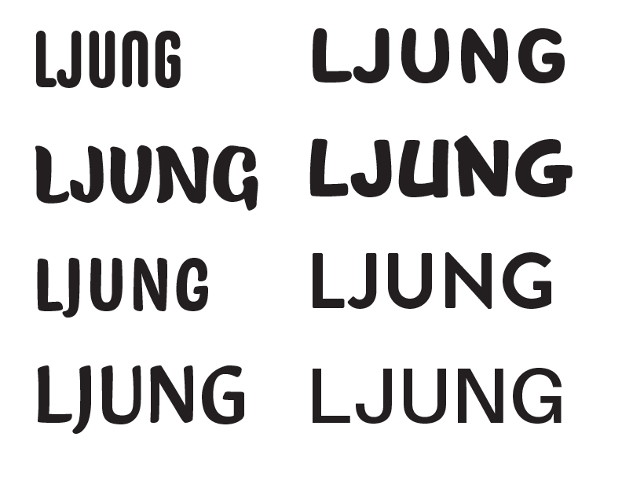
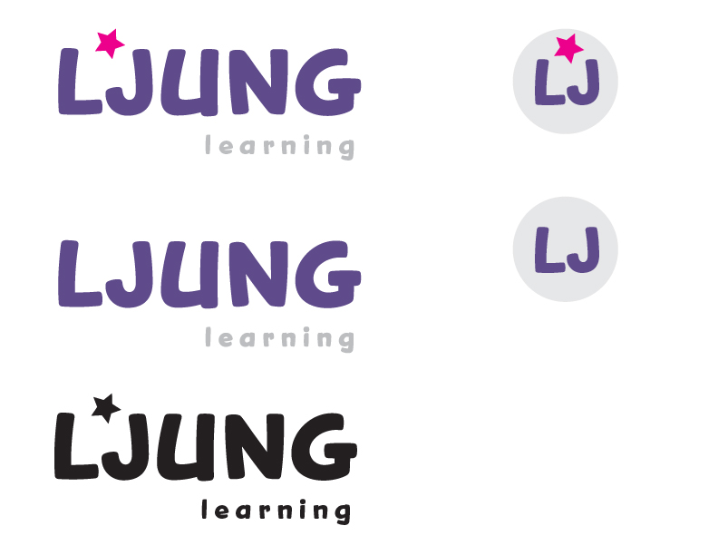
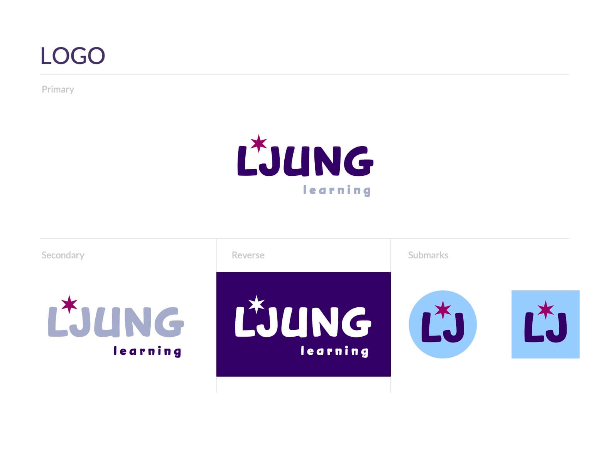
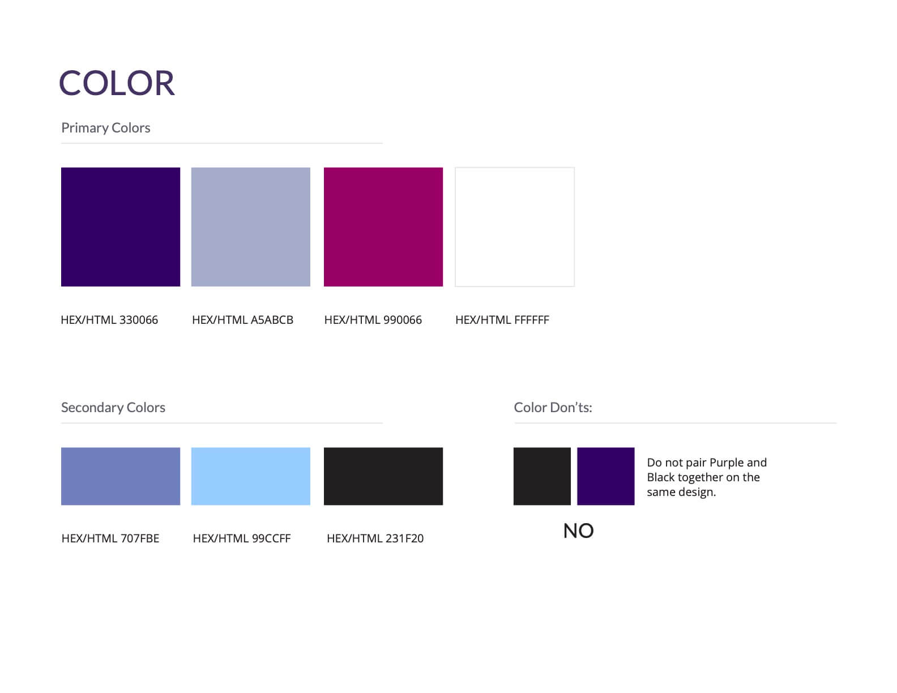
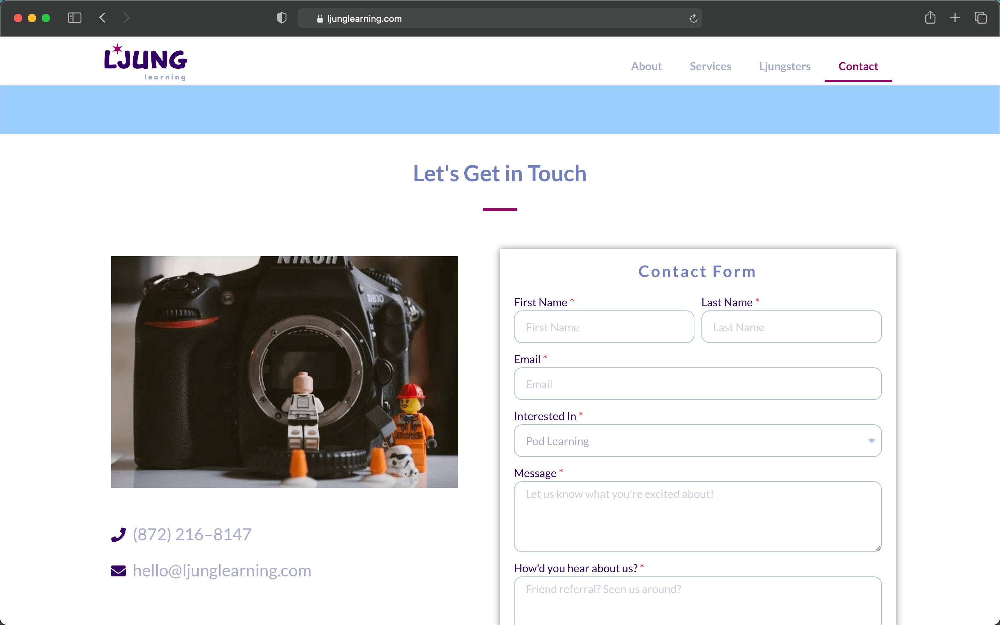

In the Fall of 2020, my sister and I started a company to support elementary school learners during the pandemic. We needed (1) a brand identity and (2) a website that our current clients could use as a home base, as well as something for potential clients to browse through.
Once we decided on our company name, we needed a brand logo! I tested out many different base fonts, looking for something modern and playful. Below are some of the different fonts that I looked at.
I thought "Snicker" would do the perfect job as our logo's base font (second row, second column above), though I was not fond of the "N." So, I took the liberty of simplifying it. I also decided that the typeface alone was too plain. So, I added a star between the L and the J. It definitely added some intrigue, but it still didn't feel quite right.
I shared my design with a friend, who pointed out that I was missing an obvious branding opportunity! I'm from Chicago, and the Chicago flag features 4 6-pointed stars. So, I added a point to our star, giving meaning to an otherwise arbitrary design choice. Here are the final logos:
I settled on playful brand colors to best appeal to our target audience: parents looking for fun learning supplementation. I'm particularly fond of purple, so I chose a deep violet as the brand's primary color. I also added a contrasting color (pink) and two complementary neutral colors (blue-ish gray and white).
With the colors and other brand guidelines now set, I fleshed out our website in Wordpress, taking advantage of the Elementor pagebuilder. I made sure to make an excellent contact page, as well as a thorough "About" page to entice future clients. Here's the Contact page below, and feel free to visit the site itself!
For starters, I learned that sharing unfinished work can be hugely beneficial. The best idea for our logo (the 6-pointed Chicago star) came from one of my friends, who has no stake in the company. In addition, I learned a great deal about the expansive Wordpress platform. The site was built using the Elementor page builder, but it also incorporates other practical web funtionality, such as Google Calendar integration. Mostly, I completed a project for my first client: myself!